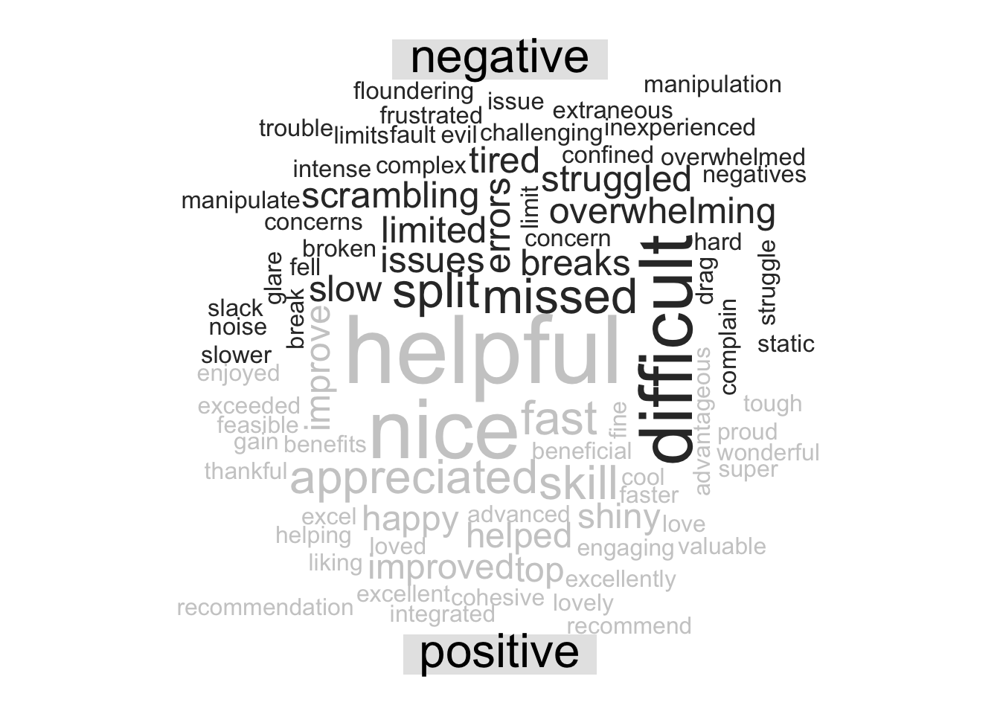
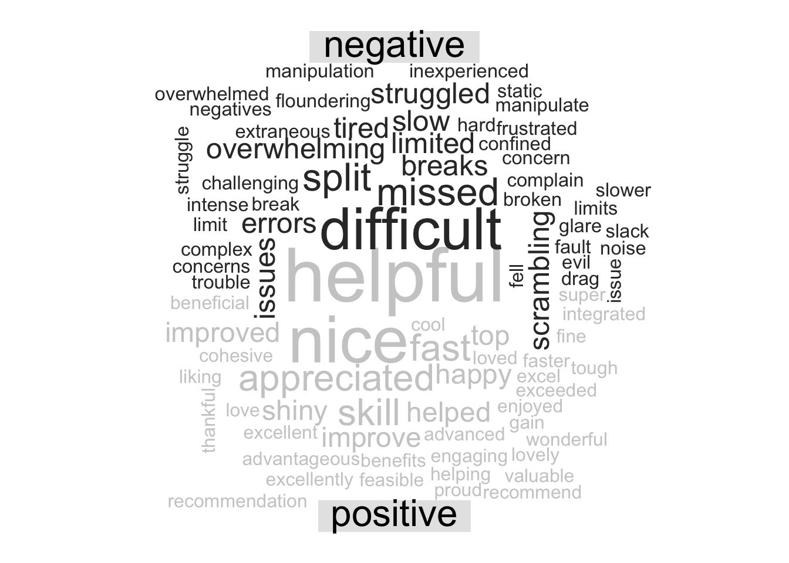

14 Text Analysis
14.1 Introduction to text analysis
14.1.1 Learning Objectives
- What a token is and how they are used
- How to use stop words
- How to customize stop words
- Introduction to sentiment analysis
14.1.2 Introduction
Much of the information covered in this chapter is based on Text Mining with R: A Tidy Approach by Julia Silge and David Robinson. This is a great book if you want to go deeper into text analysis.
Text mining is the process by which unstructured text is transformed into a structured format to prepare it for analysis. This can range from the simple example we show in this lesson, to much more complicated processes such as using OCR (optical character recognition) to scan and extract text from pdfs, or web scraping.
Once text is in a structured format, analysis can be performed on it. The inherent benefit of quantitative text analysis is that it is highly scalable. With the right computational techniques, massive quantities of text can be mined and analyzed many, many orders of magnitude faster than it would take a human to do the same task. The downside, is that human language is inherently nuanced, and computers (as you may have noticed) think very differently than we do. In order for an analysis to capture this nuance, the tools and techniques for text analysis need to be set up with care, especially when the analysis becomes more complex.
There are a number of different types of text analysis. In this lesson we will show some simple examples of two: word frequency, and sentiment analysis.
Setup
First we’ll load the libraries we need for this lesson:
library(dplyr)
library(readr)
library(tidytext)
library(wordcloud)
library(reshape2)Load the survey data back in using the code chunk below:
survey_raw <- read_csv("https://dev.nceas.ucsb.edu/knb/d1/mn/v2/object/urn%3Auuid%3A71cb8d0d-70d5-4752-abcd-e3bcf7f14783", show_col_types = FALSE)
survey_clean <- survey_raw %>%
select(-notes) %>%
mutate(Q1 = if_else(Q1 == "1", "below expectations", Q1)) %>%
mutate(Q2 = tolower(Q2))
events <- read_csv("https://dev.nceas.ucsb.edu/knb/d1/mn/v2/object/urn%3Auuid%3A0a1dd2d8-e8db-4089-a176-1b557d6e2786", show_col_types = FALSE)
survey_joined <- left_join(survey_clean, events, by = "StartDate")We are going to be working in the “tidy text format.” This format stipulates that the text column of our data frame contains rows with only one token per row. A token, in this case, is a meaningful unit of text. Depending on the analysis, that could be a word, two words, or phrase.
First, let’s create a data frame with responses to question 3, with the one token per row. We use the unnest_tokens function from tidytext, after selecting columns of interest.
q3 <- survey_joined %>%
select(StartDate, location, Q3) %>%
unnest_tokens(output = word, input = Q3)You’ll see that we now have a very long data frame with only one word in each row of the text column. Some of the words aren’t so interesting though. The words that are likely not useful for analysis are called “stop words”. There is a list of stop words contained within the tidytext package and we can access it using the data function. We can then use the anti_join function to return only the words that are not in the stop word list.
data(stop_words)
q3 <- anti_join(q3, stop_words)## Joining, by = "word"Now, we can do normal dplyr analysis to examine the most commonly used words in question 3. The count function is helpful here. We could also do a group_by and summarize and get the same result. We can also arrange the results, and get the top 10 using slice_head.
q3_top <- q3 %>%
count(word) %>%
arrange(-n) %>%
slice_head(n = 10)Term frequency
Right now, our counts of the most commonly used non-stop words are only moderately informative because they don’t take into context how many other words, responses, and courses there are. A widely used metric to analyze and draw conclusions from word frequency, including frequency within documents (or courses, in our case) is called tf-idf. This is the term frequency (number of appearances of a term divided by total number of terms), multiplied by the inverse document frequency (the natural log of the number of documents divided by the number of documents containing the term). The tidytext book has great examples on how to calculate this metric easily using some built in functions to the package.
Let’s do the same workflow for question 4:
q4 <- survey_joined %>%
select(StartDate, location, Q4) %>%
unnest_tokens(output = word, input = Q4) %>%
anti_join(stop_words)## Joining, by = "word"q4_top <- q4 %>%
count(word) %>%
arrange(-n) %>%
slice_head(n = 10)Perhaps not surprisingly, the word data is mentioned a lot! In this case, it might be useful to add it to our stop words list. You can create a data.frame in place with your word, and an indication of the lexicon (in this case, your own, which we can call custom). Then we use rbind to bind that data frame with our previous stop words data frame.
custom_words <- data.frame(word = "data", lexicon = "custom")
stop_words_full <- rbind(stop_words, custom_words)Now we can run our question 4 analysis again, with the anti_join on our custom list.
q4 <- survey_joined %>%
select(StartDate, location, Q4) %>%
unnest_tokens(output = word, input = Q4) %>%
anti_join(stop_words_full)## Joining, by = "word"q4_top <- q4 %>%
count(word) %>%
arrange(-n) %>%
slice_head(n = 10)14.2 Sentiment Analysis
In sentiment analysis, tokens (in this case our single words) are evaluated against a dictionary of words where a sentiment is assigned to the word. There are many different sentiment lexicons, some with single words, some with more than one word, and some that are aimed at particular disciplines. When embarking on a sentiment analysis project, choosing your lexicon is one that should be done with care. Sentiment analysis can also be done using machine learning algorithms.
With that in mind, we will next do a very simple sentiment analysis on our Q3 and Q4 answers using the bing lexicon from Bing Liu and collaborators, which ships with the tidytext package.
First we will use the get_sentiments function to load the lexicon.
bing <- get_sentiments("bing")Next we do an inner join to return the words from question 3 that are contained within the lexicon.
q3_sent <- inner_join(q3, bing, by = "word")DT::datatable(q3_sent)There are a variety of directions you could go from here, analysis wise, such as calculating an overall sentiment index for that question, plotting sentiment against some other variable, or, making a fun word cloud like below! Here we bring in reshape2::acast to create a sentiment matrix for each word, and pass that into wordcloud::comparison.cloud to look at a wordcloud that indicates the frequency and sentiment of the words in our responses.
q3_sent %>%
count(word, sentiment, sort = TRUE) %>%
acast(word ~ sentiment, value.var = "n", fill = 0) %>%
comparison.cloud(colors = c("gray20", "gray80"),
max.words = 100, title.size = 2)
Let’s look at the question 4 word cloud:
q4 %>%
inner_join(bing, by = "word") %>%
count(word, sentiment, sort = TRUE) %>%
acast(word ~ sentiment, value.var = "n", fill = 0) %>%
comparison.cloud(colors = c("gray20", "gray80"),
max.words = 100, title.size = 2)